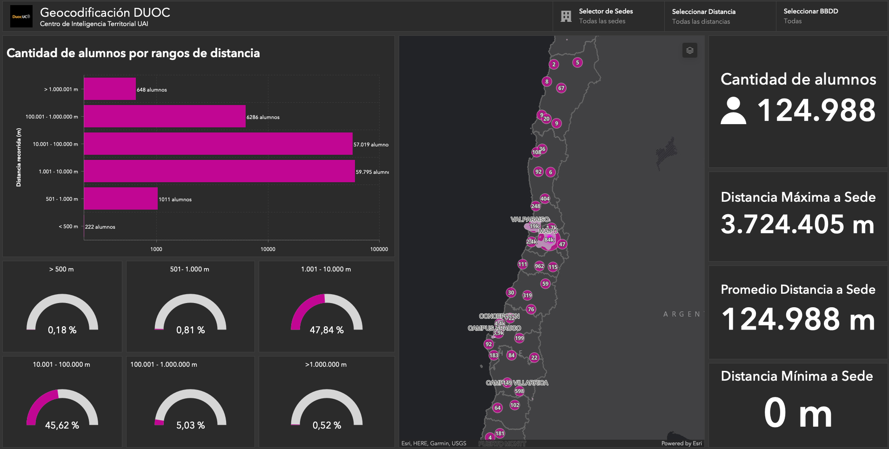

Herramientas de Geoanálisis
Aplicaciones para la Gestión Pública
Goblab UAI
19 Marzo 2025
Agenda
Agenda
- Introducción
- Importancia del Análisis Espacial
- Caso 1: Geocodificación Masiva de Direcciones
- Caso 2: Análisis de Focos de Delitos y Prevención
- Caso 3: Construcción de Indicadores Territoriales para Políticas Públicas
- Caso 4: Autocorrelación Espacial y Segregación
Objetivos de la capacitación
Objetivos de la capacitación:
La presente capacitación tiene como objetivo principal dar a conocer los procedimientos técnicos generales que se realizaron al procesar las bases, en las etapas de geocodifiacción.
Consolidación de Bases
Objetivos:
- Conocer las bases de datos, en estructura y contenidos, para analizarlas a fin de estimar niveles de complejidad en su posterior procesamiento.
- Consolidar todas las bases de datos en una sola con solamente la información necesaria para la georeferenciación, donde cada registro tiene una variable denominada ID que permite identificar su fuente y correlativo.
Generar ID:
Geocodificación de Direcciones
Geocodificación de Direcciones
Objetivos:
- Procesar y transformar direcciones para que coincidan con la base de calles nacional del motor de georeferenciación Nominatim para obtener un par de coordenadas por cada una de ellas.
- Conocer las transformaciones generales de las direcciones por expresiones regulares (regrex).
- Georeferenciar direcciones transformadas
Validar resultados de geocodificación espacialmente.

Etapa 1: Limpieza Inicial
Cargar Datos de Prueba (60 Registros)
Función de Limpieza Inicial
# Función para dejar todo en mayúscula y sin tildes
limpieza <- function(x) {
# x <- stri_trans_general(x,"latin-ASCII") # eliminar tildes
x <- stringr::str_to_upper(x) # mayúsculas
x <- chartr("ÁÉÍÓÚ", "AEIOU", x)
x <- gsub("(?!')[[:punct:]]", "", x, perl=TRUE) #Excepción apostrofe de o'higgins
x <- gsub(pattern = 'º', "", x)
x <- stringr::str_squish(x) # eliminar espacios al comienzo y espacios repetidos
x
}Aplicación de la función de limpieza
Generar columna de Consulta:
Geocodificación
Se utilizará una librería llamada tidygeocoder que da acceso a los servicios de geocodificación en este caso Nominatim online. El procedimiento que se realizó en el proyecto difiere ya que se utilizó el motor de geocodificación local que ofrece mayor performance.
Resultados de Geocodificación en cantidades:

Etapa 2: Limpieza Específica
Lectura de no geocodificados
Limpieza por expresiones regulares
# Encuentra y reemplaza
find_replace <- function(patron, reemplazo, data_vector){
ids <- grep(pattern = patron, data_vector)
data_vector[ids] <- reemplazo
return(data_vector)
}
geocoding2 <- geocoding2 %>%
mutate(NOM_CALLE = CALLE) %>%
mutate(NOM_CALLE = gsub(pattern = "AV ",replacement = "AVENIDA ",
x = NOM_CALLE)) %>%
mutate(NOM_CALLE = gsub(pattern = "PSJE ",replacement = "PASAJE ",
x = NOM_CALLE)) %>%
mutate(NOM_CALLE = gsub(pattern = "PASAJE ",replacement = " ",
x = NOM_CALLE)) %>%
mutate(NOM_CALLE = gsub(pattern = "S/N ",replacement = " ",
x = NOM_CALLE)) %>%
mutate(NOM_CALLE = stringr::str_squish(NOM_CALLE))Limpieza de Nombre de Región
geocoding2 <- geocoding2 %>%
mutate(NOM_REGION = REGION) %>%
mutate(NOM_REGION = find_replace(patron = "ÑUBLE",
reemplazo = "Región de Ñuble",
data_vector = NOM_REGION)) %>%
mutate(NOM_REGION = find_replace(patron = "METROPOLITANA",
reemplazo = "Región Metropolitana de Santiago",
data_vector = NOM_REGION)) %>%
mutate(NOM_REGION = find_replace(patron = "BIO",
reemplazo = "Región del Biobío",
data_vector = NOM_REGION)) %>%
mutate(NOM_REGION = find_replace(patron = "MAULE",
reemplazo = "Región del Maule",
data_vector = NOM_REGION)) %>%
mutate(NOM_REGION = find_replace(patron = "V - VALPARAISO",
reemplazo = "Región de Valparaíso",
data_vector = NOM_REGION))Geocodificación
geocoding2 <- geocoding2 %>%
mutate(NOM_CALLE = gsub("PASAJE", "", NOM_CALLE))
geocoding2 <- geocoding2 %>%
mutate(CONSULTA = paste0(NUMERO, " ", NOM_CALLE, ", ",
COMUNA, ", ", NOM_REGION)) %>%
mutate(ETAPA = 2)
# gecodificación
res_geocoding2 <- geocoding2 %>%
geocode(CONSULTA, method = 'osm',
lat = latitude , long = longitude)Resultados

Etapa 3: Distancia Jaro Winkler
Formulación Distancia de Jaro Winkler
Explicación
Ejemplos de aplicación

Ejemplo de Cálculo de Distancia de Jaro Winkler
calle_base <- "ALEJANDRO FLEMINS"
calle_maestro_osm <- "ALEJANDRO FLEMING"
distance_jw <- stringdist(calle_base,calle_maestro_osm, method='jw')
distance_jwReferencias de algoritmos de distancias de textos (link)

Consolidación de Geocodificación
Lectura de las etapas con resultados positivos
Todos los registros tienen coordenadas (primeros 20)
Consolidación General
Transformar a Shapefile
Visualización de Resultados
Visualización de Resultados

Recomendaciones gestión de base de datos
Recomendaciones Generales
- Separación en Columnas de elementos que componen una dirección:

Recomendaciones Generales
- Definición del formato de los datos: número, texto,
fecha o lógico, ejemplo Ejemplo:: “
NUMERACIÓN”: solo permita ingreso de números positivos. - Valores restringidos:
COMUNA: solo permita ingresar nombres de comunas existentes en Chile. - Restringir valores de columnas que no pueden quedar
vacías: Ejemplo:: “
COMUNA”: No puede quedar vacía, ya que puede existir una calle con el mismo nombre en diferentes comunas.
Documento de Referencia:
De manera más amplía se puede utilizar como consulta “Recomendación técnica Metadatos” de IDE (Infraestructura de Datos Espaciales) Chile http://www.ide.cl/images/Publicaciones/Documentos/METADATOS_IDE_CHILE.pdf.
Consultas
Consultas
Denis Berroeta G.
Coordinador de Investigación, Centro de Inteligencia Territorial - UAI
denis.berroeta@uai.cl